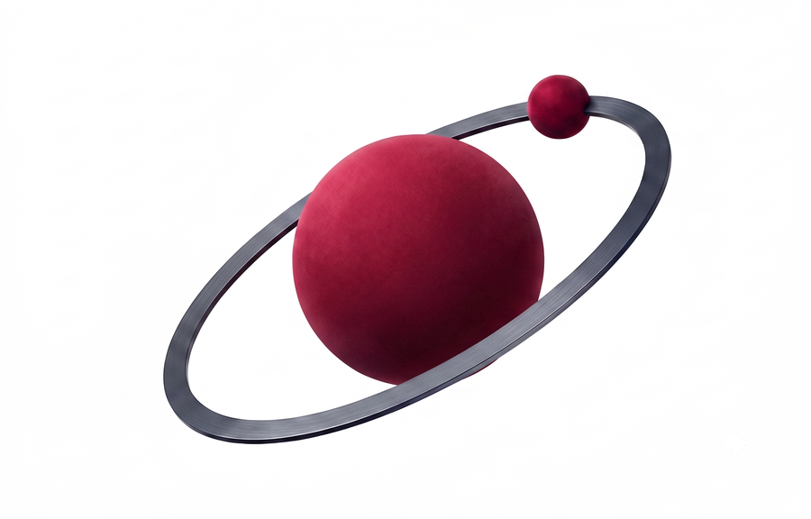

<!DOCTYPE html>
<html lang="sv">
<head>
    <meta charset="UTF-8">
    <meta name="viewport" content="width=device-width, initial-scale=1.0">
    <title>Fysiklabbet — Teori, simuleringar och övningar i fysik och matematik</title>
    <meta name="description" content="Interaktiva simuleringar, teori och övningar för Fysik nivå 1 & 2 samt Matematik nivå 1c & 2c på gymnasiet.">
    <link rel="icon" type="image/svg+xml" href="favicon.svg">
    <link rel="apple-touch-icon" href="favicon.svg">
    <!-- Open Graph / delningsförhandsvisning -->
    <meta property="og:type" content="website">
    <meta property="og:site_name" content="Fysiklabbet">
    <meta property="og:title" content="Fysiklabbet — Teori, simuleringar och övningar i fysik och matematik">
    <meta property="og:description" content="Interaktiva simuleringar, teori och övningar för Fysik nivå 1 & 2 samt Matematik nivå 1c & 2c på gymnasiet.">
    <meta property="og:url" content="https://fysiklabbet.se/">
    <meta property="og:image" content="https://fysiklabbet.se/og-fysiklabbet.png">
    <meta property="og:image:width" content="1200">
    <meta property="og:image:height" content="630">
    <meta name="twitter:card" content="summary_large_image">
    <meta name="twitter:title" content="Fysiklabbet — Teori, simuleringar och övningar i fysik och matematik">
    <meta name="twitter:description" content="Interaktiva simuleringar, teori och övningar för Fysik nivå 1 & 2 samt Matematik nivå 1c & 2c på gymnasiet.">
    <meta name="twitter:image" content="https://fysiklabbet.se/og-fysiklabbet.png">
    <link rel="preconnect" href="https://fonts.googleapis.com">
    <link rel="preconnect" href="https://fonts.gstatic.com" crossorigin>
    <link href="https://fonts.googleapis.com/css2?family=DM+Sans:opsz,wght@9..40,300..700&family=Instrument+Serif:ital@0;1&family=JetBrains+Mono:wght@400;500&display=swap" rel="stylesheet">
    <script>window.__CB = String(Date.now());</script>
    <script>document.write('<link rel="stylesheet" href="styles-laborans.css?v=' + window.__CB + '">');</script>
    <style>
        /* ── Senaste nyheten (teaser på startsidan) ────────────────── */
        .home-news { margin-top: 6px; }
        .home-news-card {
            display: grid; grid-template-columns: 300px 1fr; gap: 26px; align-items: stretch;
            text-decoration: none; color: var(--lab-ink);
            border: 1px solid var(--lab-line-strong); border-radius: 6px; overflow: hidden;
            background: var(--lab-bg-panel);
            transition: border-color 160ms ease, box-shadow 160ms ease, transform 160ms ease;
        }
        .home-news-card:hover {
            border-color: var(--lab-accent);
            box-shadow: 0 6px 22px rgba(15, 22, 32, 0.08);
            transform: translateY(-2px);
        }
        .home-news-media { position: relative; overflow: hidden; background: var(--lab-bg-raised); min-height: 190px; }
        .home-news-media img { width: 100%; height: 100%; object-fit: cover; display: block;
            transition: transform 600ms cubic-bezier(.2,.7,.2,1); }
        .home-news-card:hover .home-news-media img { transform: scale(1.04); }
        .home-news-flag {
            position: absolute; top: 12px; left: 12px;
            font-family: var(--lab-font-mono); font-size: 9.5px; letter-spacing: 0.14em;
            text-transform: uppercase; color: #fff; background: var(--lab-accent);
            padding: 5px 9px; border-radius: 2px;
        }
        .home-news-text { padding: 22px 26px 22px 0; display: flex; flex-direction: column; justify-content: center; }
        .home-news-meta {
            display: flex; gap: 12px; align-items: center; flex-wrap: wrap;
            font-family: var(--lab-font-mono); font-size: 10.5px; letter-spacing: 0.06em;
            color: var(--lab-ink-muted); text-transform: uppercase; margin-bottom: 10px;
        }
        .home-news-meta .cat { color: var(--lab-accent); }
        .home-news-meta .dot { width: 3px; height: 3px; border-radius: 50%; background: var(--lab-ink-muted); }
        .home-news-title {
            font-family: var(--lab-font-display); font-size: clamp(22px, 2.6vw, 30px);
            line-height: 1.1; letter-spacing: -0.01em; color: var(--lab-ink); margin: 0 0 9px;
        }
        .home-news-card:hover .home-news-title { color: var(--lab-accent); }
        .home-news-deck { font-size: 14.5px; line-height: 1.55; color: var(--lab-ink-soft); margin: 0 0 14px; }
        .home-news-more {
            font-family: var(--lab-font-mono); font-size: 12px; letter-spacing: 0.04em;
            color: var(--lab-ink); border-bottom: 2px solid var(--lab-accent);
            padding-bottom: 2px; align-self: flex-start;
        }
        @media (max-width: 720px) {
            .home-news-card { grid-template-columns: 1fr; }
            .home-news-media { min-height: 0; aspect-ratio: 16 / 9; }
            .home-news-text { padding: 20px 22px; }
        }
    </style>
</head>
<body class="laborans">
    <div id="root"></div>

    <script src="data/katalog.js"></script>
    <script>document.write('<scr' + 'ipt src="data/nyheter.js?v=' + window.__CB + '"></scr' + 'ipt>');</script>
    <script crossorigin src="https://unpkg.com/react@18/umd/react.production.min.js"></script>
    <script crossorigin src="https://unpkg.com/react-dom@18/umd/react-dom.production.min.js"></script>
    <script src="https://unpkg.com/@babel/standalone@7.29.7/babel.min.js"></script>

    <script type="text/babel" data-presets="react">
        const { useState, useEffect, useMemo, useRef } = React;
        const KF = window.KATALOG_FLAT;
        const NYHETER = window.NYHETER || [];

        const MONTHS_SV = ['januari','februari','mars','april','maj','juni','juli',
            'augusti','september','oktober','november','december'];
        const formatNewsDate = (iso) => {
            const [y, m, d] = iso.split('-').map(Number);
            return `${d} ${MONTHS_SV[m - 1]} ${y}`;
        };

        const UPDATES = [
            { date: '2026-07-18', href: 'fysik-repetition.html', title: 'Sammanfattningar och repetitionsspel — alla fysikkapitel', text: 'Varje kapitel i Fysik nivå 1 och Fysik nivå 2 avslutas nu med en sammanfattning: kapitlets formler, begrepp, viktigaste samband och figurer komprimerade inför provet. Till varje sammanfattning hör ett repetitionsspel med varierade stationer — para ihop formler med betydelser, sortera begrepp i lådor, ordna i rätt följd, fyll luckor och avgör sant eller falskt. Dra brickorna med musen eller fingret, samla stjärnor och hitta luckorna innan provet gör det.' },
            { date: '2026-07-14', href: 'np.html#ma3c-vt2022', title: 'Nationellt prov i Ma 3c: våren 2022', text: 'Första provet för Matematik fortsättning nivå 1c (Ma 3c) är inne — nationella provet från våren 2022 med alla 28 uppgifter från delprov B, C och D: derivator och primitiva funktioner, enhetscirkeln, derivatans definition, tangenter, integraler, triangelsatserna och två optimeringsklassiker (mopedens bensinförbrukning och guldtråden över silverplattan). Lösningarna klickas fram ett steg i taget med förklaringar, uppbyggda figurer och bedömning enligt bedömningsanvisningarna.' },
            { date: '2026-07-14', href: 'np.html#fy2-vt2016', title: 'Första fysikprovet: kursprov Fysik 2 våren 2016', text: 'Nationella prov-sidan får sitt första fysikprov! Kursprovet i Fysik 2 från våren 2016 med alla 19 teoriuppgifter ur delprov A — exoplanetens yttemperatur, repet som brister i filmen, masspektrometern och katodstråleröret. Lösningarna klickas fram ett steg i taget, och kraftfigurerna byggs upp i samma takt: först tyngdkraften, sedan spännkraften, sedan jämförelsen — så att varje kraft hinner landa innan nästa ritas ut.' },
            { date: '2026-07-14', href: 'np.html#ma1c-ht2016', title: 'Ännu ett nationellt prov: Ma 1c hösten 2016', text: 'Ett tredje nationellt prov med lösningar steg för steg är inne — Matematik 1c från hösten 2016, alla 28 uppgifter från delprov B, C och D (med tärnings- och kulspelsuppgifter, takvinklar, index och cirkelbevis). Samma upplägg som tidigare: klicka fram lösningen ett steg i taget, förklaring till vad och varför, figurer som byggs upp, delsvar per deluppgift och bedömning enligt bedömningsanvisningarna.' },
            { date: '2026-07-14', href: 'np.html#ma1c-vt2017', title: 'Fler nationella prov: Ma 1c våren 2017', text: 'Nu finns ett andra nationellt prov med lösningar steg för steg — Matematik 1c från våren 2017, alla 27 uppgifter från delprov B, C och D. Samma upplägg som tidigare: klicka fram lösningen ett steg i taget, med förklaring till vad som görs och varför, figurer som byggs upp längs vägen, delsvar för varje deluppgift, och bedömning enligt bedömningsanvisningarna. Presentationsläget fungerar för alla prov.' },
            { date: '2026-07-14', href: 'np.html#ma1c-vt2022', title: 'Nytt: nationella prov med lösningar steg för steg', text: 'Träna på riktiga nationella prov! Först ut är Matematik 1c från våren 2022 — alla 31 uppgifter från delprov B, C och D. Varje uppgift har en fullständig lösning som du klickar fram ett steg i taget, med en förklaring till varje steg: vad vi gör och varför. Figurerna byggs upp i takt med lösningen — se hjälplinjer ritas och mått tonas in. Efter sista steget visas svaret och hur uppgiften bedöms enligt bedömningsanvisningarna.' },
            { date: '2026-07-13', href: 'katalog.html#ma3c-2.3:visualisering', title: 'Interaktiva visualiseringar i matematiken', text: 'Sextiotre "aha-maskiner" har byggts in i mattekurserna: dra h mot 0 och se sekanten bli en tangent, släpp tusen kulor genom en Galtonbräda, pussla algebra-bitar till en rektangel vars sidor är faktorerna, gå ett varv runt en månghörning och se pilen vrida sig exakt 360°, zooma från en atom till Vintergatan på tiopotensernas skala, se ränta-på-ränta växa om enkel ränta — och upptäck i tre synkade grafer att en kurva kan vara avtagande och ändå bukta uppåt. Avsnitt med en visualisering har fått ett eget kort — Visualisering — bredvid Teori, Exit ticket och Övningar.' },
            { date: '2026-07-10', href: 'katalog.html#ma4', title: 'Nytt ämne: Matematik fortsättning nivå 2 — hela kursen', text: 'Fjärde matematikkursen är komplett! 47 avsnitt i fyra kapitel — trigonometri (enhetscirkeln, trigonometriska ekvationer, sinus- och cosinusfunktionerna), derivata (kedjeregeln, produkt- och kvotregeln, asymptoter), integraler (area, täthetsfunktioner, rotationskroppar) och komplexa tal (polär form, de Moivres formel och Eulers formel). Varje avsnitt har teorigenomgång med figurer, övningar i tre nivåer, exit ticket — och interaktiva grafritare för de trigonometriska funktionerna.' },
            { date: '2026-07-10', href: 'fysik2-brada-tva-stod-app.html', title: 'Mer kraftmoment — bräda på två bockar', text: 'En bräda vilar på två bockar och en person kan gå ut på den. Dra i personen och i stöden och se stödkrafterna F_P och F_Q ändras direkt — ju närmare tyngdpunkten ett stöd sitter, desto mer bär det. Välj vridningspunkt fritt (vid ett stöd blir dess hävarm 0) och lös ut den andra kraften med momentlagen. Går tyngdpunkten förbi ett stöd välter brädan.' },
            { date: '2026-07-08', href: 'katalog.html#ma3c', title: 'Nytt ämne: Matematik fortsättning nivå 1c — hela kursen', text: 'Nu tar matematiken klivet in i analysen! Hela Ma3c är ute: 39 avsnitt i sex kapitel — rationella uttryck och gränsvärden, derivatan, deriveringsregler, kurvor och extremvärden, integraler samt trigonometri med triangelsatserna. Varje avsnitt har teorigenomgång med exempel och figurer, övningar i tre nivåer och exit ticket — och en interaktiv grafritare där du drar i basen och ser derivatan av eˣ.' },
            { date: '2026-07-07', href: 'katalog.html#ma2c', title: 'Nytt ämne: Matematik nivå 2c — hela kursen', text: 'Fortsättningskursen är här! 42 avsnitt i sex kapitel — linjära ekvationssystem, algebra och andragradsekvationer, andragradsfunktioner, geometri med satser och bevis, logaritmer samt statistik med normalfördelning och regression. Varje avsnitt har teorigenomgång med exempel och figurer, övningar i tre nivåer, exit ticket och interaktiva grafer där parametrar formar kurvan.' },
            { date: '2026-07-06', href: 'katalog.html#ma1c-4.3', title: 'Interaktiva grafer i teorin', text: 'Genomgångarna om räta linjer och funktioner har fått inbyggda grafritare: dra i reglagen för k och m (eller C och a) och se hur grafen, ekvationen och lutningens trappsteg ändras live. Panorera genom att dra i rutnätet och zooma med mushjulet — direkt i genomgången. Först ut är sex avsnitt i Matematik nivå 1c.' },
            { date: '2026-07-06', href: 'katalog.html#ma1c', title: 'Nytt ämne: Matematik nivå 1c — hela kursen', text: 'Fysiklabbet får matematik! Hela kursen är ute: 56 avsnitt i sex kapitel — aritmetik, algebra och ekvationer, procentuella förändringar, räta linjer och funktioner, statistik och sannolikhetslära samt trigonometri med vektorer. Varje avsnitt har teorigenomgång med exempel och figurer, övningar i tre nivåer och exit ticket.' },
            { date: '2026-07-05', href: 'katalog.html#fy1-1.2:exitticket', title: 'Exit tickets — kort förhör på varje avsnitt', text: 'Alla 113 avsnitt har fått en exit ticket: ett kort flervalsförhör på avsnittets viktigaste grunder — begrepp, enheter, formler och enkel huvudräkning. Svarar du fel får du veta varför just det alternativet är fel, och det rätta svaret markeras med sin förklaring. Du hittar förhöret mellan Teori och Simulering i varje avsnitt.' },
            { date: '2026-07-03', href: 'fysik2-transformator-app.html', title: 'Transformator', text: 'Två spolar på en gemensam järnkärna: växelströmmen i primärspolen ger ett varierande magnetiskt flöde som inducerar en ny spänning i sekundärspolen. Ändra U₁ och varvtalen N₁ och N₂, se spänningsgrafen — och anslut en lampa för att se att strömmen ändras åt motsatt håll så att effekten bevaras.' },
            { date: '2026-07-03', href: 'fysik2-hastighetsvaljare-app.html', title: 'Hastighetsväljare och masspektrometer', text: 'Partiklar med olika fart skjuts in mellan två laddade plattor — bara de med hastigheten v = 𝔼/B går rakt fram genom hålet. På andra sidan böjer magnetfältet partikeln i en halvcirkel mot en fotografisk plåt, och ur banradien vägs partikeln. Prova elektron, proton, deuteron och alfapartikel.' },
            { date: '2026-07-03', href: 'fysik2-virvelstrommar-app.html', title: 'Virvelströmmar', text: 'En aluminiumpendel svänger genom ett magnetfält och bromsas in av inducerade virvelströmmar — enligt Lenz lag motverkar de alltid sin orsak. Slå av elektromagneten mitt i svängningen och byt till en platta med spår för att se bromsningen nästan försvinna.' },
            { date: '2026-07-03', href: 'fysik2-lenz-lag-app.html', title: 'Inducerad ström och Lenz lag', text: 'Ta tag i stavmagneten och närma dig eller avlägsna dig från slingan — galvanometern ger utslag åt olika håll, och strömmen får enligt Lenz lag alltid en riktning som motverkar orsaken. Jämför magnetens fält med slingans inducerade fält, byt pol och se kraften som bromsar magneten.' },
            { date: '2026-07-03', href: 'fysik2-induktion-app.html', title: 'Induktion och inducerad spänning', text: 'Dra en ledare genom ett magnetfält och se den inducerade spänningen e = l · v · B uppstå — men bara medan ledaren rör sig! Elektronerna knuffas av den magnetiska kraften mot ena änden tills kraftjämvikt råder, och polariteten byter håll när rörelsen vänder.' },
        ];

        const normalize = (text) => text.toLowerCase()
            .replace(/å/g, 'a').replace(/ä/g, 'a').replace(/ö/g, 'o')
            .replace(/é/g, 'e').replace(/è/g, 'e');

        const HAYSTACKS = KF.map(sim =>
            normalize([sim.title, sim.description, sim.course, sim.chapter, ...(sim.keywords || [])].join(' '))
        );

        function Topbar() {
            return (
                <div className="lab-topbar">
                    <div className="lab-topbar-inner">
                        <span>FYSIKLABBET — TEORI, SIMULERINGAR OCH ÖVNINGAR I FYSIK OCH MATEMATIK</span>
                    </div>
                </div>
            );
        }

        function Header() {
            return (
                <div className="lab-header">
                    <div className="lab-header-inner">
                        <a className="lab-logo" href="index.html">
                            <svg width="36" height="36" viewBox="0 0 36 36" aria-hidden="true">
                                <g transform="rotate(-24 18 18)">
                                    <ellipse cx="18" cy="18" rx="15" ry="6" fill="none" stroke="currentColor" strokeWidth="1.4" />
                                    <circle cx="28.04" cy="13.54" r="1.9" fill="var(--lab-accent)" />
                                </g>
                                <circle cx="18" cy="18" r="2.8" fill="var(--lab-accent)" />
                            </svg>
                            <span className="lab-logo-text">Fysiklabbet</span>
                        </a>
                        <SearchBar />
                        <nav className="lab-nav" aria-label="Huvudnavigation">
                            <a href="index.html" className="active">Start</a>
                            <div className="lab-nav-dd">
                                <button type="button" className="lab-nav-dd-trigger" aria-haspopup="true">
                                    Ämne
                                    <svg className="lab-nav-dd-caret" width="10" height="10" viewBox="0 0 12 12" fill="none" stroke="currentColor" strokeWidth="1.6" strokeLinecap="round" strokeLinejoin="round" aria-hidden="true"><path d="M2.5 4.5 6 8l3.5-3.5"/></svg>
                                </button>
                                <div className="lab-nav-dd-menu">
                                    <a href="katalog.html#fy1">Fysik nivå 1</a>
                                    <a href="katalog.html#fy2">Fysik nivå 2</a>
                                    <a href="katalog.html#ma1c">Matematik nivå 1c</a>
                                    <a href="katalog.html#ma2c">Matematik nivå 2c</a>
                                    <a href="katalog.html#ma3c">Matematik fortsättning nivå 1c</a>
                                    <a href="katalog.html#ma4">Matematik fortsättning nivå 2</a>
                                </div>
                            </div>
                            <a href="simuleringar.html">Simuleringar</a>
                            <a href="np.html">Nationella prov</a>
                            <a href="nyheter.html">Fysiknyheter</a>
                            <a href="om.html">Om</a>
                            <a href="kontakt.html">Kontakt</a>
                        </nav>
                    </div>
                </div>
            );
        }

        function WelcomeHero() {
            return (
                <section className="lab-welcome">
                    <div className="lab-welcome-inner">
                        <div className="lab-welcome-text">
                            <h1 className="lab-welcome-title">
                                Förstå genom att <em>utforska</em>.
                            </h1>
                            <p className="lab-welcome-lead">
                                Teori, interaktiva simuleringar och övningar för <strong>Fysik nivå 1</strong>,{' '}
                                <strong style={{ whiteSpace: 'nowrap' }}>Fysik nivå 2</strong> och nu även{' '}
                                <strong style={{ whiteSpace: 'nowrap' }}>Matematik nivå 1c</strong>,{' '}
                                <strong style={{ whiteSpace: 'nowrap' }}>2c</strong> och{' '}
                                <strong style={{ whiteSpace: 'nowrap' }}>fortsättningskursen</strong> på gymnasiet — plus{' '}
                                <a href="nyheter.html" style={{ color: 'var(--lab-accent)', textDecoration: 'none', fontWeight: 600 }}>dagliga fysiknyheter</a>. Läs, utforska och förstå.
                            </p>
                            <div className="lab-welcome-actions">
                                <a className="lab-btn lab-btn-primary" href="katalog.html#fy1">
                                    Fysik nivå 1 →
                                </a>
                                <a className="lab-btn lab-btn-primary" href="katalog.html#fy2">
                                    Fysik nivå 2 →
                                </a>
                                <a className="lab-btn" href="katalog.html#ma1c">
                                    Matematik nivå 1c →
                                </a>
                                <a className="lab-btn" href="katalog.html#ma2c">
                                    Matematik nivå 2c →
                                </a>
                                <a className="lab-btn" href="katalog.html#ma3c">
                                    Matematik fortsättning 1c →
                                </a>
                                <a className="lab-btn" href="katalog.html#ma4">
                                    Matematik fortsättning 2 →
                                </a>
                            </div>
                        </div>
                        <div className="lab-welcome-art" aria-hidden="true">
                            
                        </div>
                    </div>
                </section>
            );
        }

        function SearchBar() {
            const [query, setQuery] = useState('');
            const [activeIdx, setActiveIdx] = useState(-1);
            const [open, setOpen] = useState(false);
            const wrapRef = useRef(null);

            const matches = useMemo(() => {
                const q = normalize(query.trim());
                if (!q) return [];
                const terms = q.split(/\s+/).filter(t => t.length > 0);
                if (terms.length === 0) return [];
                const filtered = KF.filter((_, i) => {
                    const hay = HAYSTACKS[i] || '';
                    return terms.every(t => hay.includes(t));
                });
                const out = [];
                for (const sim of filtered) {
                    const code = sim.course === 'Fysik nivå 2' ? 'fy2' : 'fy1';
                    out.push({ ...sim, kind: 'teori', resultHref: `katalog.html#${code}-${sim.num}` });
                    if (sim.href) {
                        out.push({ ...sim, kind: 'sim', resultHref: sim.href });
                    }
                }
                return out;
            }, [query]);

            useEffect(() => { setActiveIdx(matches.length > 0 ? 0 : -1); }, [matches.length, query]);

            useEffect(() => {
                const onDocClick = (e) => {
                    if (!wrapRef.current) return;
                    if (!wrapRef.current.contains(e.target)) setOpen(false);
                };
                document.addEventListener('click', onDocClick);
                return () => document.removeEventListener('click', onDocClick);
            }, []);

            const handleKey = (e) => {
                if (!open || matches.length === 0) return;
                if (e.key === 'ArrowDown') { e.preventDefault(); setActiveIdx((activeIdx + 1) % matches.length); }
                else if (e.key === 'ArrowUp') { e.preventDefault(); setActiveIdx((activeIdx - 1 + matches.length) % matches.length); }
                else if (e.key === 'Enter' && activeIdx >= 0) { e.preventDefault(); window.location.href = matches[activeIdx].resultHref; }
                else if (e.key === 'Escape') { setQuery(''); setOpen(false); e.target.blur(); }
            };

            return (
                <div className="lab-search lab-search--in-header" ref={wrapRef}>
                    <div className="lab-search-input-wrap">
                        <span className="lab-search-icon" aria-hidden="true">⌕</span>
                        <input type="text" value={query} className="lab-search-input"
                            placeholder="sök — t.ex. coulomb, pendel, magnetfält, ljus…"
                            autoComplete="off" aria-label="Sök på Fysiklabbet"
                            onChange={(e) => { setQuery(e.target.value); setOpen(true); }}
                            onFocus={() => { if (query.trim()) setOpen(true); }}
                            onKeyDown={handleKey} />
                        {query && (
                            <button className="lab-search-clear" aria-label="Rensa sökning"
                                onClick={() => { setQuery(''); setOpen(false); }}>✕</button>
                        )}
                    </div>
                    <div className={'lab-search-results' + (open && query.trim() ? ' visible' : '')} role="listbox">
                        {open && query.trim() && matches.length === 0 && (
                            <div className="lab-search-empty">Inget matchar "{query}"</div>
                        )}
                        {open && matches.map((sim, idx) => (
                            <a key={`${sim.course}-${sim.num}-${sim.kind}`} href={sim.resultHref}
                                className={'lab-search-result' + (idx === activeIdx ? ' active' : '')}
                                role="option" onMouseEnter={() => setActiveIdx(idx)}>
                                <span className="lab-search-result-icon">
                                    {sim.kind === 'teori' ? '📖' : sim.icon}
                                </span>
                                <div>
                                    <div className="lab-search-result-title">
                                        <span className="lab-search-result-kind">
                                            {sim.kind === 'teori' ? 'Teori' : 'Simulering'}
                                        </span>
                                        {sim.title}
                                    </div>
                                    <div className="lab-search-result-desc">{sim.description}</div>
                                </div>
                                <div className="lab-search-result-meta">
                                    {sim.course.toUpperCase()}<br />{sim.num}
                                </div>
                            </a>
                        ))}
                    </div>
                </div>
            );
        }

        function NewsTeaser() {
            const latest = NYHETER[0];
            if (!latest) return null;
            return (
                <section className="lab-section home-news">
                    <div className="lab-updates-header">
                        <span className="lab-mono-label">Senaste nyheten</span>
                        <a className="lab-mono-label" href="nyheter.html"
                           style={{ textDecoration: 'none', color: 'var(--lab-accent)' }}>
                            Alla nyheter →
                        </a>
                    </div>
                    <a className="home-news-card" href={`nyheter.html?id=${latest.id}`}>
                        <div className="home-news-media">
                            <span className="home-news-flag">Senaste nytt</span>
                            
                        </div>
                        <div className="home-news-text">
                            <div className="home-news-meta">
                                <span className="cat">{latest.category}</span>
                                <span className="dot" />
                                <span>{formatNewsDate(latest.date)}</span>
                            </div>
                            <h3 className="home-news-title">{latest.title}</h3>
                            <p className="home-news-deck">{latest.deck}</p>
                            <span className="home-news-more">Läs nyheten →</span>
                        </div>
                    </a>
                </section>
            );
        }

        function Updates() {
            const viewportRef = React.useRef(null);
            const [atStart, setAtStart] = React.useState(true);
            const [atEnd, setAtEnd] = React.useState(false);

            // Uppdatera pilarnas av/på-läge utifrån hur långt raden är scrollad.
            const updateArrows = React.useCallback(() => {
                const el = viewportRef.current;
                if (!el) return;
                const max = el.scrollWidth - el.clientWidth;
                setAtStart(el.scrollLeft <= 1);
                setAtEnd(el.scrollLeft >= max - 1);
            }, []);

            React.useEffect(() => {
                updateArrows();
                window.addEventListener('resize', updateArrows);
                return () => window.removeEventListener('resize', updateArrows);
            }, [updateArrows]);

            // Bläddra en hel "sida" (synlig bredd) åt vänster/höger. Webbläsaren
            // klampar scrollLeft, så sista klicket landar snyggt vid radens slut.
            const scrollByPage = (dir) => {
                const el = viewportRef.current;
                if (!el) return;
                el.scrollBy({ left: dir * el.clientWidth, behavior: 'smooth' });
            };

            const hasOverflow = !(atStart && atEnd);

            return (
                <section id="senaste" className="lab-section lab-updates">
                    <div className="lab-updates-header">
                        <span className="lab-mono-label">Senaste uppdateringar</span>
                        <div className="lab-updates-header-right">
                            <span className="lab-mono-label">JULI — 2026</span>
                            {hasOverflow && (
                                <div className="lab-updates-nav">
                                    <button type="button" className="lab-updates-arrow"
                                        onClick={() => scrollByPage(-1)} disabled={atStart}
                                        aria-label="Visa nyare uppdateringar">‹</button>
                                    <button type="button" className="lab-updates-arrow"
                                        onClick={() => scrollByPage(1)} disabled={atEnd}
                                        aria-label="Visa äldre uppdateringar">›</button>
                                </div>
                            )}
                        </div>
                    </div>
                    <div className="lab-updates-viewport" ref={viewportRef} onScroll={updateArrows}>
                        <div className="lab-updates-track">
                            {UPDATES.map(u => (
                                <article key={u.href} className="lab-update-item">
                                    <time>{u.date}</time>
                                    <h3><a href={u.href}>{u.title}</a></h3>
                                    <p>{u.text}</p>
                                </article>
                            ))}
                        </div>
                    </div>
                </section>
            );
        }

        function Footer() {
            return (
                <footer className="lab-section lab-footer">
                    <span>© 2025 FYSIKLABBET</span>
                    <span>SKAPAD FÖR GYMNASIEELEVER</span>
                </footer>
            );
        }

        function App() {
            return (
                <div className="lab-page">
                    <Topbar />
                    <Header />
                    <WelcomeHero />
                    <NewsTeaser />
                    <Updates />
                    <Footer />
                </div>
            );
        }

        ReactDOM.createRoot(document.getElementById('root')).render(<App />);
    </script>

    <script>document.write('<scr' + 'ipt src="feedback.js?v=' + window.__CB + '" defer></scr' + 'ipt>');</script>
</body>
</html>
